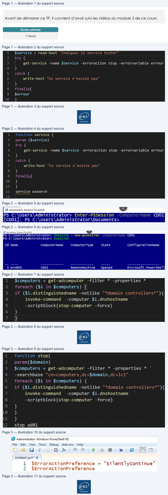

Transcription du document du Drive TSSR. La mise en forme est adaptée au Web ; les compléments IA du portail sont présentés séparément.
Initiation à PowerShell
TP du Module 05
Avant de démarrer ce TP, il convient d’avoir suivi les vidéos du module 5 de ce cours.
Durée estimée
1 heure
Objectifs :
•
Comprendre les fonctions, modules et la gestion des erreurs
Consignes :
Les manipulations sont à réaliser sur la machine CLI01
•
Pour réaliser le TP, utilisez un IDE comme ISE ou Visual Studio Code.
Réalisez un script permettant de tester la présence d’un service. Le nom du service sera
variable. Dans le cas où le service n’est pas existant, aucun message ne sera affiché mais il
sera consigné dans une variable. Un message sera affiché lorsque tous les services seront
testés.
Indiquez les lignes de commandes de votre script.
Page 1/3
© ENI – Tous droits réservés
BE
$service
= read-host
"Indiquez
le service
tester"
get-service
-name $service -erroraction stop -errorvariable erreur
4
}
catch
{
}
Finally{
$erreur
}
Initiation à PowerShell
•
Transformez ce script en fonction ; le nom du service sera un paramètre.
•
Ouvrez une session depuis votre machine client vers votre serveur CD01.
Stocker votre session dans une variable
•
Créer un script permettant de trouver les ordinateurs stockés dans l’AD, puis à condition
que la machine ne soit pas un contrôleur de domaine, le script lancera l’extinction de
la machine.
Indiquez les commandes utilisées.
Page 2/3
© ENI – Tous droits réservés
r
param
($service)
try
{
1
get-service
-name $service -erroraction stop -errorvariable erreur
}
catch
{
}
finally{
:+
J
}
J
)
service wsearch
EX Administrator: Windows PowerShell
= J
PS C:\Users\Administrator> Enter-PSSession
cD01
[CDO1]:
PS C:\Users\Administrator\Documents>
EN Administrator Windows Powerthall
L =
=
PS C:\Users\Administrator>
new-pssess1on
CD01
PS c:\Users\Administrator>
Id Name
computerName
computerType
State
confi gurationName
_3 WinkM3
cD01
RemoteMachine
opened
Microsoft.Powershel1
1
$computers = get-adcomputer
-filter *
-properties
*
»
foreach
($i in $computers)
{
3
if
($i.distinguishedname -notlike "*domain controllers*"){
4
invoke-command
-computer $i.dnshostname
~
-scriptblock{stop-computer
-force}
>
+}
|
@
Initiation à PowerShell
•
Transformez le script en fonction ; le nom de domaine sera indiqué en paramètre.
Indiquez les commandes utilisées.
•
Modifiez durablement le comportement de votre Ise pour que les erreurs des
commandes soient stockées dans une variable. Puis modifiez le comportement de la
console pour que les messages d’erreur ne soient pas affichés.
Page 3/3
© ENI – Tous droits réservés
]
function
stop{
param( $domain)
;
$computers
= get-adcomputer
-filter
* -properties
*
~
1
-searchbase “cn=computers,dc=$domain,dc=lcl"
5
foreach
($i
in $computers)
{
»
if ($i.distinguishedname -notlike
"*domain controllers*"){
7
invoke-command
-computer $i.dnshostname
—~
8
-scriptblock{stop-computer -force}
}
L
-}
L
istop ad@1
8 Administrator: Windows PowerShell ISE
File
Edit
View
Tools
Debug
Add-ons
Help
Heb
4
Oo À
>
œ
6 Em
| Untitled.ps1* X
|
1
$€rrorActionPreference = "SilentlyContinue”
2
$ErrorActionPreference
